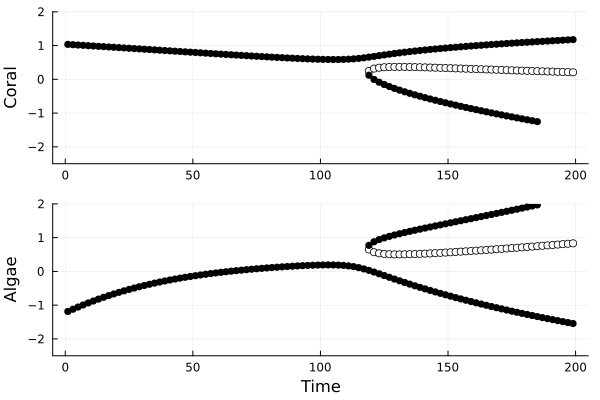
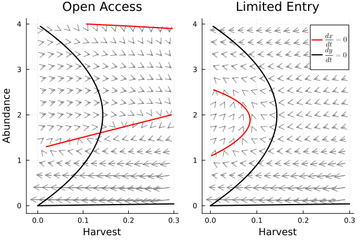

Examples
Using time-dependent NODEs to predict regime shifts
One interesting use of NODE and UDE models in ecology is detecting and predicting regime shifts, which are sudden changes in the structure and function of an ecosystem often associated with a change in conditions. Regime shifts are caused by the interaction of nonlinear feedback mechanisms, environmental variability, and long-term environmental change. NODE and UDE models built with UniversalDiffEq.jl can capture all three of these processes, making it possible to detect and predict regime shifts from data.
In the following example, we build a NODE model for a two-species system that undergoes a regime shift. The data are simulated from the Mumby et al. (2007) model of coral-algae competition with an added term for stochastic coral mortality events and a long-term increase in the coral mortality rate from increasing temperature. The increasing temperature eventually causes the system to shift from a coral-dominated to an algae-dominated state (Fig. 1). The data from the time of the regime shift are used to fit the model.
Figure 1: Time series of simulated coral and algae abundances. The vertical dashed line indicates an increase in temperature associated with coral mortality.
The model is a function of the area covered by coral $p_C$ and algae $p_A$, an environmental covariate $X$ that is related to coral mortality, and time $t$ to capture the effect of the slowly increasing coral mortality rate. The coral and macroalgae abundances are transformed to $x_i = softmax^{-1}(p_i)$ using the inverse softmax transformation before fitting the model
\[ \frac{dx_C}{dt} = NN_1(x_C,x_A,X,t) \\ \frac{dx_A}{dt} = NN_2(x_C,x_A,X,t) \\\]
UniversalDiffEq.jl does not have built-in methods to construct time-dependent NODEs, but they can be built easily using the CustomDerivatives function. In this case, we initialize a neural network that takes four inputs (one each for coral cover, algae cover, the environmental covariate, and time) and two outputs using Lux.jl. The derivatives function derivs! divides time by 50 to match the scale of the other inputs; then concatenates the abundances of each species, the covariate $X$, and time into a vector; and finally evaluates the neural network. The UDE model is constructed using the CustomDerivatives function, passing both the species data in a data frame called data and the covariate in a data frame called X.
using Lux, UniversalDiffEq
# generate synthetic data
data,X = simulate_coral_data()
# set neural network dimensions
dims_in = 4
dims_out = 2
hidden = 10
# Define neural network with Lux.jl
NN = Lux.Chain(Lux.Dense(dims_in, hidden, tanh), Lux.Dense(hidden, dims_out))
rng = Random.default_rng()
NNparameters, NNstates = Lux.setup(rng,NN)
parameters = (NN = NNparameters,)
# Define derivatives (time dependent NODE)
function derivs!(du,u,X,p,t)
vals = NN([u[1],u[2],X[1],t/50-1.0],p.NN,NNstates)[1]
du[1] = vals[1]
du[2] = vals[2]
return du
end
model = UniversalDiffEq.CustomDerivatives(data[1:80,:],X,derivs!,parameters;proc_weight=2.5,obs_weight=10.0,reg_weight=10^-2.5)
gradient_descent!(model, verbose = true, maxiter = 500)
gradient_descent!(model, verbose = true, maxiter = 500, step_size = 0.01)
nothingWe can use the plot_state_estimates and plot_predictions functions to test the fit of the model to the training data.
UniversalDiffEq.plot_state_estimates(model)
UniversalDiffEq.plot_predictions(model)
Unsurprisingly, given that this is simulated data, our model was able to fit the training data very closely.
Given that the model fits the data well, we can move on to our analysis. The goal of this model is to capture the effects of a slowly changing variable on the dynamics of the coral-algae system. In particular, we want to identify any potential regime shifts, points in time where a small change in the environment leads to a large change in the state of the ecosystem. Often, regime shifts are characterized by the appearance or disappearance of equilibrium points in a dynamical system. We can identify these events by tracking changes in the derivatives function of the NODE model over time. This function is the right-hand side of a system of ODEs and, therefore, can be analyzed for equilibrium points and their stability. Because the NODE model is time-dependent, new equilibria may appear or existing ones may change their stability creating a regime shift.
To identify regime shifts, we can extract the right-hand side of the ODE from the fitted model using the get_right_hand_side function. In the following example, we use the derivatives function RHS to plot a vector field for the coral and macroalgae at four points in time.
using Plots
p1 = vectorfield_and_nullclines(model,[0.0];t = 0, n = 15, lower = [-2.0,-2.0], upper = [2.0,2.0])
p2 = vectorfield_and_nullclines(model,[0.0];t = 70, n = 15, lower = [-2.0,-2.0], upper = [2.0,2.0])
p3 = vectorfield_and_nullclines(model,[0.0];t = 100, n = 15, lower = [-2.0,-2.0], upper = [2.0,2.0])
p4 = vectorfield_and_nullclines(model,[0.0];t = 130, n = 15, lower = [-2.0,-2.0], upper = [2.0,2.0])
plt = plot(p1,p2,p3,p4)
savefig(plt,"../docs/src/figures/regiem_changes_vector plots.png")
plt
The vector plots show clear changes in the dynamics of the system over time that likely constitute a regime shift from a coral-dominated state an algae-dominated state. For small values of time, the vector fields all point to the upper left, which is high coral abundance and low algae abundance. Over time, however, a second equilibrium appears in the lower right: low coral and high algae abundance. The final vector field, t = 130, predicts 50 years into the future after the end of the time series. This plot predicts that the basin of attraction around the algae-dominated state will continue to grow, which is consistent with the data, and shows a sudden switch from high coral to high algae abundance.
We can also illustrate the regime shift in the system by plotting the equilibrium coral and algae abundances for different values of time using the equilibrium_and_stability function. The following code block uses equilibrium_and_stability to calculate the equilibrium point of the model at each point in time and colors stable equilibrium points black and unstable equilibrium points white. This analysis shows the coral-dominated equilibrium bifurcating into two equilibrium points after time 120. Some additional equilibrium points are also identified over time.
p1 = Plots.plot(ylims = (-2.5,2.0), ylabel = "Coral")
p2 = Plots.plot(ylims = (-2.5,2.0), xlabel = "Time", ylabel = "Algae")
for t in 1:2:180
print(t," ")
eqs,evals = equilibrium_and_stability(model,[0.0],[-2.0,-2.0],[2.0,2.0];t=t,Ntrials=50)
for i in eachindex(eqs)
col = "white"
if evals[i] < 0 #negative real part of the dominant eigenvalue indicates long-term stability
col = "black"
end
Plots.scatter!(p1,[t],eqs[i][2:2],color=col, label = "")
Plots.scatter!(p2,[t],eqs[i][1:1],color=col, label = "")
end
end
plt=Plots.plot(p1,p2,layout = (2,1))
savefig(plt,"../docs/src/figures/regiem_changes_bifrucation_plot.png")
plt
References
Mumby, P. J., Hastings, A. & Edwards, H. J. Thresholds and the resilience of Caribbean coral reefs. Nature 450, 98–101 (2007).
Using UDEs to learn the dynamics of coupled human-natural systems
Natural resources like fisheries are examples of coupled human and natural systems, where human activities influence the state of the natural system, and the environment influences human activities. One of the primary goals of coupled human-natural systems research is understanding how these cycles of mutual causation determine biological and social outcomes. We may also wish to understand how interventions from regulators modify interactions between people and their environment to identify if these interventions achieve their desired effects.
In this example, we build a UDE model to describe how the interactions between a fishing fleet and the exploited population change before and after the government limits entry into the fishery and predict the counterfactual outcomes in the absence of regulation.
Data: US West Coast Cowcod Fishery
For this example, we use data from groundfish fisheries on the West Coast of the United States. These fisheries were managed under an open-access framework until 1992 when entry into the fishery was restricted following large declines in catch and abundance. We gathered data on the stock biomass $B$ (proxy for abundance) and harvest $H$ from the RAM legacy database and coded the change in regulations using binary variable $I_{LE}$ that switched from zero to one in 1992 when limited entry regulations began. The time series of these three variables are shown below.
using CSV, Plots, DataFrames
data = CSV.read("CowCodFishery.csv",DataFrame)
plt = Plots.scatter(data.t,data.y, label = "log Abundance", xlabel = "Time", ylabel = "value", width = 2)
Plots.scatter!(data.t,data.H, label = "Harvest", width = 2)
Plots.scatter!(data.t,data.limited_entry, label = "Limited entry", width = 2)
Model
We use a logistic growth model to describe the changes in the population biomass and model changes in harvest as a function of the stock, the current harvest, and regulations. The factors that drive changes in harvest may be complex and nonlinear so we use a neural network to model the rate of change of harvest. Combining these assumptions yields a system of differential equations that we fit to the data using the UniversalDiffEq.jl package
\[\frac{dH}{dt} = NN(H,B,I_{LE};w,b)\\ \\ \frac{dB}{dt} = rB(1-B/K) - qH,\]
where $r$ is the growth rate of the population, $K$ is the carrying capacity, $q$ is a scaling factor to match the units of stock biomass and harvest, $w$ is the set of neural network weights, and $b$ is the set of neural network biases. We define the model using a neural network from Lux.jl and the CustomDerivatives function. We fit the model parameters using the gradient descent and BFGS algorithms.
# set up neural network
using UniversalDiffEq, Lux, Random
dims_in = 3
hidden = 10
NN = Lux.Chain(Lux.Dense(dims_in,hidden,tanh),Lux.Dense(hidden,1))
rng = Random.default_rng()
NNparameters, NNstates = Lux.setup(rng,NN)
# set initial parameters
init_parameters = (NN = NNparameters, q = 1.0, r = 0.5, K = 4.0)
# Define model
function derivs!(du,u,X,p,t)
du[1] = NN(vcat(u,X),p.NN,NNstates)[1][1] # harvest
du[2] = p.r*u[2]*(1-u[2]/p.K) - p.q*u[1] # logistic growth minus harvest x scaling coef
end
# organize data
state_variables = DataFrame(t = data.t, H = data.H, y = exp.(data.y))
covariates = DataFrame(t = data.t, X = data.limited_entry)
# initialize model
model = CustomDerivatives(state_variables,covariates,derivs!,init_parameters;proc_weight=2.0,obs_weight=0.5,reg_weight=10^-4.0)
# fit the model
gradient_descent!(model,verbose = true)
BFGS!(model,verbos = true)
nothingWe can evaluate the model fit using plot_state_estimates and plot_predictions functions to compare the estimated state variables to the data and the predicted changes in state variables to the observed changes between time steps. The fitted model performs well by visual inspection on both metrics.
p1 = plot_state_estimates(model)
p2 = plot_predictions(model)
plot(p1,p2, layout= (2,1))Results:
Counterfactual prediction
We use the model to predict the harvest level and abundance of the population under limited entry and open access after 1992 when regulations were imposed. Under limited entry, the model predictions closely match historical data, with harvest decreasing and abundance increasing. Under open access conditions, the model predicts the system will approach an equilibrium with much lower abundance than observed in the historical data with harvest remaining relatively constant after 1992.
u1991 = reshape(model.data[:,model.times .== 1991],2)
times_OA = collect(1940:1972) # 22 years under open access conditions
times_LE = collect(1991:2020) # 22 years under regulation
forecast_OA = UniversalDiffEq.forecast(model,u1991, times_OA)
forecast_LE = UniversalDiffEq.forecast(model,u1991, times_LE)
plt = Plots.scatter(state_variables.t, state_variables.H,c=1, label = "Catch Historical")
Plots.scatter!(state_variables.t,log.(state_variables.y),c=2, label = "Abundance Historical")
Plots.plot!(1991 .+ forecast_OA[:,1] .- forecast_OA[1,1], forecast_OA[:,2], width = 2,c=1, label = "Catch Counter Factual")
Plots.plot!(1991 .+ forecast_OA[:,1].- forecast_OA[1,1],log.(forecast_OA[:,3]), width = 2,c=2, label = "Abundance Counter Factual",xlabel = "Time", ylabel = "(log) Biomass")
Plots.plot!(forecast_LE[:,1], forecast_LE[:,2], width = 2,c=1, label = "Forecast", linestyle = :dash)
Plots.plot!(forecast_LE[:,1],log.(forecast_LE[:,3]), width = 2,c=2, label = "Forecast", xlabel = "Time", ylabel = "(log) Biomass", linestyle = :dash)
Dynamics before and after regulation
The limited entry regulations produced a qualitative change in the dynamics of the coupled human-natural system. Prior to regulations, our model predicts the system had oscillating dynamics around a stable equilibrium. These dynamics are characteristic of the bioeconomic cycles predicted by theoretical models of open-access fisheries. When regulated, the cycling dynamics disappear and the model predicts declining harvest and increasing biomass over most of the state space.
p1 = vectorfield_and_nullclines(model,0, upper = [0.3,4.0], arrow_color = "blue",legend = :none,title = "Open Access",xlabel = "Harvest", ylabel = "Abundance")
p2 = vectorfield_and_nullclines(model,1, upper = [0.3,4.0], arrow_color = "blue",legend = :topright,title = "Limited Entry",xlabel = "Harvest", ylabel = "")
plt = plot(p1,p2)